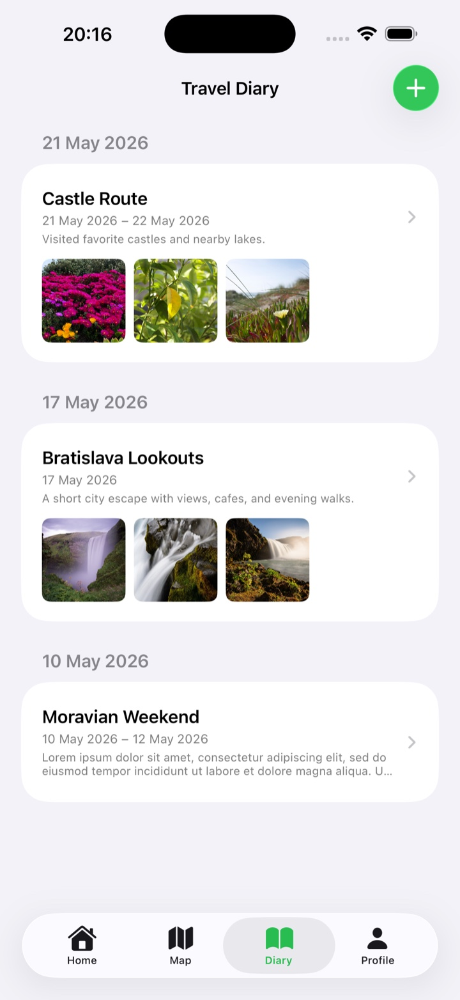
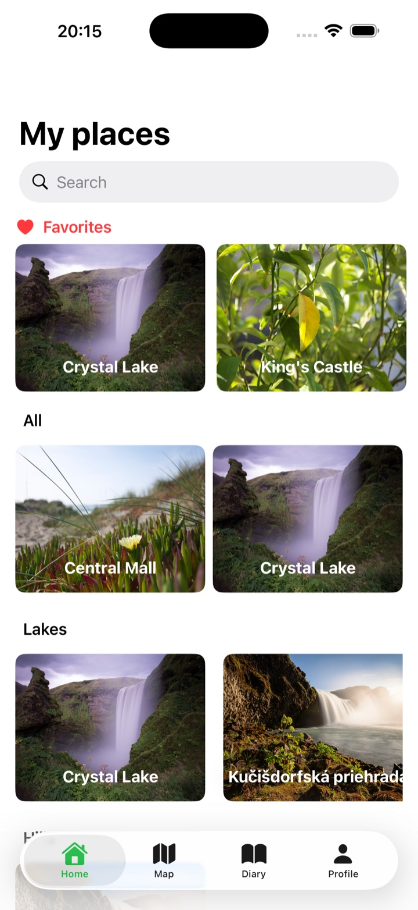
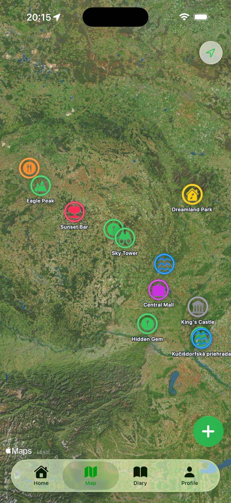
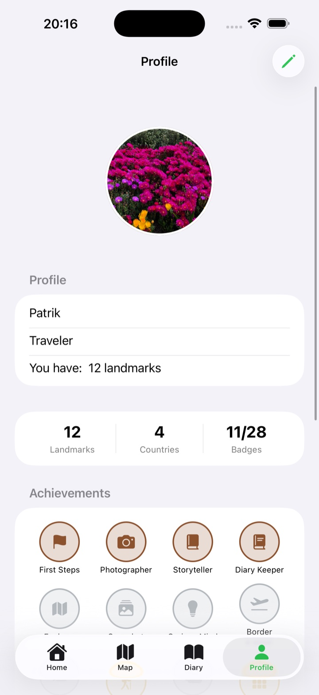
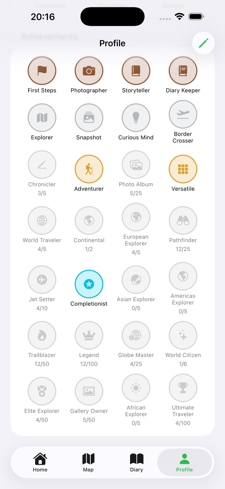

iPhone app
Worldwanderer
Save places worth returning to with photos, notes, category colors, precise coordinates, and Apple Maps navigation.


Apple Maps built in
Your saved places live on Apple Maps.
The map tab uses Apple Maps to show your saved places as category-colored annotations. From a landmark detail screen, the Navigate action opens directions so you can get back there when it matters.
Real app screens
Trips, profile progress, and achievements use the same clean iPhone interface.


SF Symbols from the app
Every category uses the same symbol and annotation color.
These category badges mirror the Swift mapping in Worldwanderer's app code.
App icon assets
The site uses the icon assets from the Xcode project.
The website uses the standard, dark, and tinted Worldwanderer app icons from the app's asset catalog.
Add landmarks fast
Create a landmark from your current location or enter exact latitude and longitude.
Recognize places on the map
Photos, notes, categories, and colors make saved places easy to scan later.
Private by default
No accounts, ads, analytics, or tracking. Worldwanderer keeps your saved places local.
Simple privacy
Your landmarks stay on your iPhone.
Profile details, landmark names, coordinates, notes, categories, and selected photos are stored locally by the app.